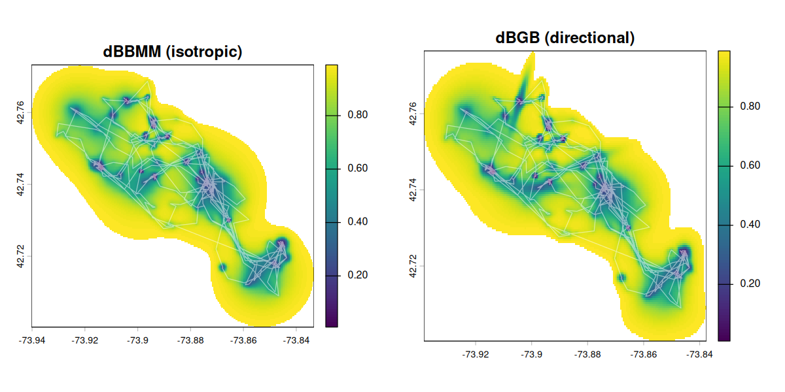

Public release. The source of truth for
move2utilsis its development repository on MPCDF GitLab; each release is mirrored to GitHub for public use. Documentation: https://move2universe.github.io/move2utils. Please report bugs and ask questions by opening an issue.
Utility functions for animal-movement data stored as move2 objects. A home for a handful of ports from the legacy move package, together with a small amount of novel scientific machinery described in a companion paper.

What’s in the package
| Topic | Functions | Provenance |
|---|---|---|
| Utilisation distributions & variance |
mt_dbbmm_variance(), mt_dbbmm_ud(), mt_dbgb_variance(), mt_dbgb_ud(), mt_motion_variance(), mt_suggest_dbbmm_window(), ud_volume(), ud_outer_probability(), emd()
|
Ported from move. C kernels kept; deprecated sp dependencies dropped in favour of sf/terra. |
| Corridor detection | mt_corridor() |
Ported from move::corridor() (LaPoint et al. 2013). Spatial-indexing (sf R-tree) replaces the old sp/rgeos path. |
| Outlier detection — four primitives + unified entry-point |
mt_clean_track() (unified entry-point), mt_flag_outliers_bridge(), mt_flag_outliers_detour(), mt_flag_outliers(), mt_flag_speed_cap(), mt_peel_speed(), v_phys_estimate(), mt_suggest_speed_cap(), mt_diagnose_clean_track(), mt_flag_consensus()
|
New. Four complementary primitives (geometric bridge-residual, path-vs-displacement detour ratio, probabilistic movement-metric, step-level speed cap) composable individually or through mt_clean_track() which iterates them under the evidence-corroborated consensus rule (the default; configurable via consensus =, e.g. the previous "class_aware") plus topological block-expansion. Described in the companion paper. |
| Outlier detection — state-aware bridge variants (standalone) |
mt_flag_outliers_dbgb(), mt_flag_outliers_dbbmm()
|
Estimate per-axis bridge motion variance and flag fixes via an envelope rule across three Z channels (bridge_z_class taxonomy); useful when behavioural states make a single global threshold over- or under-flag. Currently exported as standalone primitives, not wired into the cascade. |
| Outlier detection — alternative strategies |
mt_sequential_outliers(), mt_combined_outliers()
|
Voting/scanning alternatives on the probability surface. See ?mt_clean_track’s @seealso for when to reach for each. |
| Outlier detection — multi-scale persistence annotation | mt_persistence_score() |
Detector-agnostic confidence helper. Annotates any flagger’s output with a per-flag persistence score across temporal scales; recommended use is class-aware filtering on cascade output. See vignette("OUTLIER_5_persistence_score"). |
| Pre-cleaning helpers |
mt_filter_gps_quality(), mt_mask_segments()
|
Drop fixes whose GPS geometry is unreliable; mask track segments by predicate. |
| Trajectory utilities |
mt_thin_distance(), mt_thin_time()
|
Distance- and time-based thinning, preserving track IDs. |
All functions operate directly on move2 objects and preserve CRS, track IDs, timestamps, and metadata.
Installation
# install.packages("remotes")
# GitHub (public release)
remotes::install_github("move2universe/move2utils", build_vignettes = TRUE)-
Required:
move2,sf,terra,units. -
Suggested:
circular,geosphere,MASS,lwgeom,lubridate,dplyr,parallel,testthat,knitr.
Quick tour
Each block below is copy-paste runnable on bundled example data and ends in a figure, so you can see what the package does before reading on.
Utilisation distributions
library(move2)
library(move2utils)
library(terra)
library(scales)
fishers <- mt_read(mt_example())
fishers <- fishers[!sf::st_is_empty(fishers), ]
leroy <- fishers[mt_track_id(fishers) == "M1", ]
## Dynamic Brownian-bridge motion variance. `location_error` is the GPS
## error in metres; `window_size` / `margin` set the moving window for the
## variance breakpoint search (tune with `mt_suggest_dbbmm_window()`).
var <- mt_dbbmm_variance(leroy, location_error = 25, window_size = 31, margin = 7)
ud <- mt_dbbmm_ud(var, dim_size = 600, ext = 1) # isotropic UD raster
vol <- ud_volume(ud) # cumulative-volume space
vol[vol[] > 0.99] <- NA # keep the 99% range
vol <- terra::trim(vol) # crop to the occupied area
## Directional (bivariate-Gaussian) variant. The directional kernel is
## elongated, so it needs a slightly larger `ext` to fit the raster.
var_d <- mt_dbgb_variance(leroy, location_error = 25, window_size = 31, margin = 7)
ud_d <- mt_dbgb_ud(var_d, dim_size = 600, ext = 1.5)
vol_d <- ud_volume(ud_d)
vol_d[vol_d[] > 0.99] <- NA
vol_d <- terra::trim(vol_d)
par(mfrow = c(2, 1))
plot(vol, main = "dBBMM (isotropic)")
plot(leroy, max.plot = 1, type = "l", add = TRUE, col = alpha("white", 0.5))
plot(vol_d, main = "dBGB (directional)")
plot(leroy, max.plot = 1, type = "l", add = TRUE, col = alpha("white", 0.5))The UD is returned in the track’s own CRS (here lon/lat), so the track overlays directly. See vignette("UD_dbbmm_ud") for the full workflow.
Corridor detection
## High-speed, low-variance passages (LaPoint et al. 2013).
out <- mt_corridor(leroy)
table(out$corridor) # corridor / not corridor
plot(sf::st_geometry(out), col = "grey80", pch = 20, cex = 0.5, asp = 1)
plot(sf::st_geometry(out)[out$corridor == "corridor"],
col = "red", pch = 20, add = TRUE)Outlier cleaning
## A bundled synthetic track that contains known outliers.
tracks <- mt_read(system.file("extdata/synthetic_tracks.csv.gz", package = "move2utils"))
cpf_a <- filter_track_data(tracks, .track_id = "CPF_A")
## One call: iterates four detectors under evidence-corroborated flagging
## plus topological block expansion, auto-projects lon/lat internally, and
## returns in the original CRS. `plot = TRUE` (the default) draws the kept
## track with the removed locations marked.
clean <- mt_clean_track(cpf_a)
## Flag without removing, to inspect the decision:
flagged <- mt_clean_track(cpf_a, remove = FALSE)
table(flagged$is_outlier)The four primitives (mt_flag_outliers_bridge(), mt_flag_outliers_detour(), mt_flag_outliers(), mt_flag_speed_cap()) can also be run on their own — see the table below. For the full workflow, choosing detectors, and reading the diagnostics, start at vignette("OUTLIER_1_getting_started").
Which function should I use?
| Task | Function |
|---|---|
| Estimate dynamic motion variance |
mt_dbbmm_variance() / mt_dbgb_variance()
|
| Compute a utilisation distribution |
mt_dbbmm_ud() / mt_dbgb_ud()
|
| Flag corridor segments | mt_corridor() |
| One-call outlier cleanup | mt_clean_track() |
Post-run health check on mt_clean_track() output |
mt_diagnose_clean_track() |
| Geometric per-fix outlier detection (leverage-immune) | mt_flag_outliers_bridge() |
| Geometric, time-insensitive (path/displacement ratio) | mt_flag_outliers_detour() |
| Probabilistic per-fix outlier detection | mt_flag_outliers() |
| Step-level impossible-speed outlier detection | mt_flag_speed_cap() |
| Iterative speed peel for coherent multi-fix error clusters | mt_peel_speed() |
Allometric physiological speed cap from (mass, mode)
|
v_phys_estimate() |
| Inspect a track’s speed distribution and suggest a cap | mt_suggest_speed_cap() |
| Classify the kind of error at each flagged location (directional residual) | mt_flag_outliers_bridge(method = "directional") |
State-aware bridge primitive with per-axis envelope rule + bridge_z_class taxonomy |
mt_flag_outliers_dbgb() |
| Isotropic state-aware bridge primitive (faster; one Z channel) | mt_flag_outliers_dbbmm() |
| Sequential scan from confirmed-good fixes (alternative strategy) | mt_sequential_outliers() |
| Majority vote across gap / entropy / sequential strategies | mt_combined_outliers() |
| Per-flag confidence via multi-scale persistence (cascade or any flagger) | mt_persistence_score() |
| Short track with a longer clean reference | mt_flag_outliers(x, reference = long) |
| Pre-cleaning: drop fixes with bad GPS geometry | mt_filter_gps_quality() |
Vignettes
The cleaning workflow has its own ordered set of vignettes; readers new to the package should walk them in this order.
Outlier cleaning (workflow order):
-
vignettes/OUTLIER_1_getting_started.Rmd— the one-callmt_clean_track()workflow on a bundled synthetic track with known outliers, then a brief tour of each primitive for users who want finer control. -
vignettes/OUTLIER_4_outlier_bridge.Rmd— the geometric bridge-residual primitive in depth (combined / isotropic / directional methods, error-morphology classification). -
vignettes/OUTLIER_example_outlier_whitestork.Rmd— a worked example on a real white-stork track with multi-state behaviour and migration spikes. -
vignettes/OUTLIER_2_diagnose_clean_track.Rmd— post-run health check. Six diagnostic panels analogous toplot.lm()for a GLM; tells you when the cleaner over-flagged and points at the remedy. Read this if yourmt_clean_track()result looks suspicious. -
vignettes/OUTLIER_3_state_conditional.Rmd— recipe for the multi-state failure mode the diagnostic flags. The supported manual path until a first-class state-conditional API ships.
Other utilities:
-
vignettes/OUTLIER_example_leo_migration.Rmd— worked outlier-detection example on long-distance migration data. -
vignettes/UD_dbbmm_ud.Rmd/vignettes/UD_dbgb_ud.Rmd/vignettes/UD_ud_comparison.Rmd— utilisation-distribution workflows. -
vignettes/UD_bursted_uds.Rmd— context-aware (per-burst) dBBMM/dBGB using thedplyridiom that replacesmove::burst. -
vignettes/corridor.Rmd— corridor detection on a raw track. -
vignettes/UD_gap_aware_ud.Rmd/vignettes/interpolate_and_thin.Rmd— supporting workflows.
When the cleaner over-flags (and when to supply (mass, mode))
mt_clean_track() has two failure modes the user should recognise. Both are documented by empirical benchmarks committed in this repo and are signalled by the diagnostic suite at run time.
Failure mode 1 — multi-state behaviour with no real outliers
On tracks where the animal has very different speed regimes (resting at colony + flight, wintering + migration, perched + foraging), per-fix detectors threshold against the dominant baseline distribution and flag the minority state’s fixes as anomalous — even when none are GPS errors.
Empirical example: Columba livia Saline-20160803-048308 (homing pigeon, n = 5479). The pigeon has two modes — perched at the loft (0.10 m/s) and racing flight (15.2 m/s). With naive defaults mt_clean_track() flags 696 fixes (12.7 %) — all of which are racing flight, not GPS errors. Naive speed cap and atlastools correctly flag 0 on this track because the racing flight is biologically below the 30 m/s physiological cap.
Symptoms: very high flag rate (>5 %) on a track with no visible off-trajectory fixes; mt_diagnose_clean_track() Panel 1 shows multiple substantive modes; Panel 2 shows a sustained band of elevated flag rate corresponding to the minority state.
What to do: see vignette(“OUTLIER_3_state_conditional”) — segment by speed mode, run mt_clean_track() per segment, recombine. Or filter the track to one state before cleaning.
Failure mode 2 — block-shaped contamination at naive defaults
On tracks with sustained contaminated trains (GPS spoofs, deployment confusion, multi-fix data corruption) the auto-cap can land at biologically absurd values (the data’s own outliers define a “gap” the auto-cap finds). The speed primitive then doesn’t fire on the spoof boundaries reliably enough for block expansion to seed, so the contaminated train is silently kept.
Empirical example: K02 golden eagle (real Movebank study 2830439412, n = 851 k, 175-fix spoof in 2025-06-14). With naive defaults mt_clean_track() recovers 0 / 175 spoof fixes (auto-cap landed at 88 m/s, far above any biological eagle speed). With (mass = 4.5, mode = "flying") the same wrapper recovers 175 / 175 via block expansion.
Symptoms: very few final flags despite a track that obviously has contaminated regions; the wrapper now prints a “primitive-disagreement signature” warning when bridge caught flags the conjunction dropped — supplying mass+mode resolves this.
What to do: supply (mass, mode) to mt_clean_track() (auto-derives a Hirt 2017 physiological cap), or pass v_max = <published_value> for sprint-mode-aware species. The wrapper also warns when the auto-cap lands above 50 m/s.
Empirical evidence
-
65-individual stratified Movebank audit (
audits/2026-04-29-stratified-movebank/findings.md): 75 % PASS, 95 % defensible, 0 crashes on naive defaults; the 5 % OVER_FLAG cases all hit Failure mode 1. -
Three head-to-head benchmarks (
benchmarks/2026-XX-XX-vs-competitors/):- Phase 1 (synthetic): mt_clean F1 = 0.98, atlastools F1 = 0.74, naive F1 = 0.76, trip::sda F1 = 0.04.
- Phase 2 (K02 spoof): mt_clean tier 1 (mass+mode) recovers 175/175; per-fix competitors recover 2/175 (boundaries only).
- Phase 3 (audit subset, real multi-state): mt_clean over-flags 5892 multi-state behaviour fixes; naive and atlastools correctly flag 0.
Each adjustable parameter targets a specific empirically-distinguishable failure mode. The diagnostic suite tells the user which knob to reach for.
Background
Several methods are ported onto move2 from their original descriptions. The corridor concept follows LaPoint, Gallery, Wikelski & Kays (2013) Landscape Ecology 28: 1615–1630. The dynamic Brownian-bridge utilisation distribution and motion variance follow Horne, Garton, Krone & Lewis (2007) Ecology 88: 2354–2363 and Kranstauber, Kays, LaPoint, Wikelski & Safi (2012) Journal of Animal Ecology 81: 738–746, with the directional bivariate-Gaussian-bridge variant after Kranstauber, Safi & Bartumeus (2014) Movement Ecology 2: 5. Utilisation distributions are compared by the Earth mover’s distance (Rubner, Tomasi & Guibas 2000 International Journal of Computer Vision 40: 99–121), computed via the Sinkhorn optimal-transport approximation (Cuturi 2013 Advances in Neural Information Processing Systems 26).
The outlier-detection framework — four complementary primitives (geometric bridge residual, path-vs-displacement detour ratio, probabilistic movement-metric, step-level speed cap) sharing a gap-aware non-parametric normalisation and combinable through an iterative unified detector with evidence-corroborated flagging (the default; class_aware and other rules selectable via consensus =) plus topological block expansion — is the novel scientific content of the package and is described in the companion paper (bioRxiv preprint, submitted to Methods in Ecology and Evolution).
Citation
If you use move2utils, please cite the Application Note; for the outlier-detection methodology specifically, also cite the companion paper. Both are bioRxiv preprints, submitted to Methods in Ecology and Evolution. citation("move2utils") returns both.
Kranstauber B, Safi K, Scharf AK (2026).
move2utils: a utility toolkit for themove2ecosystem. bioRxiv. doi:[10.64898/2026.07.07.736908](https://doi.org/10.64898/2026.07.07.736908).
Safi K (2026). Self-thresholding hierarchical outlier-detection for animal movement tracks. bioRxiv. doi:[10.64898/2026.07.11.737894](https://doi.org/10.64898/2026.07.11.737894).